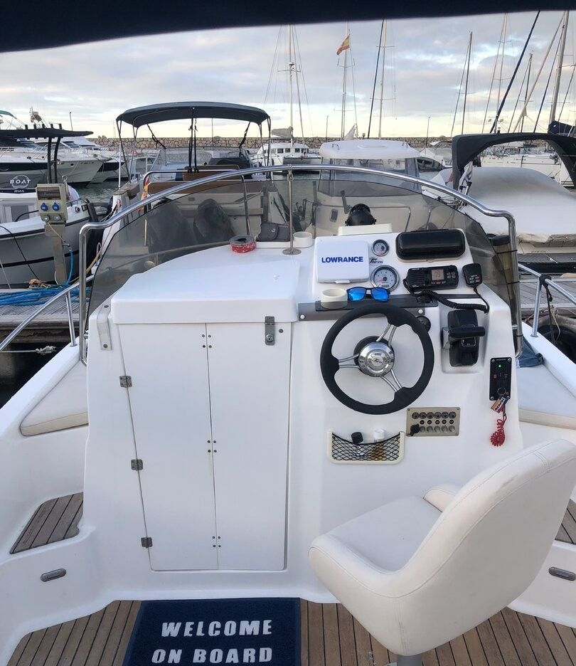

Pesca en barco en Málaga con el patrón
Pesca recreativa en los fondos que el patrón conoce, con el material y el cebo incluidos. Para quien pesca de siempre y para quien no ha cogido una caña nunca.
Cómo es la salida de pesca
El patrón lleva años pescando en esta costa y sabe dónde suele haber movimiento según la época. El barco lleva localizador de peces, sonda, depósito de cebo vivo y portacañas.
Ponemos cañas, cebo y todo lo necesario, y os enseñamos a montar y a lanzar si no habéis pescado nunca. Se pesca en dos o tres puntos, según la picada. Se respetan tallas mínimas y cupos de la pesca recreativa, y lo que no se pueda quedar vuelve al agua.
Con 8 horas hay tiempo de ir a fondos más alejados de la costa y de parar a comer fondeados. Elegís la hora de salida.
Cómo suele ir
- Embarque y preparación del material
- Navegación a los primeros fondos
- Pesca en dos o tres puntos según la picada
- Vuelta a puerto con lo pescado


Preguntas frecuentes
¿Hace falta saber pescar?
No. El patrón os enseña a montar la caña y a lanzar.
¿Hay que llevar material?
No, ponemos cañas, cebo y todo lo necesario.
¿Nos podemos quedar lo que pesquemos?
Sí, respetando las tallas mínimas y los cupos de la pesca recreativa. Lo que no se pueda quedar vuelve al agua.
¿Pueden venir personas que no pesquen?
Sí. El grupo puede ser de hasta 8 personas y no hace falta que pesquen todas.
¿Y si hace mal tiempo?
El patrón decide si se puede salir con seguridad según el parte y el estado del mar. Si la salida se cancela por el tiempo, eliges entre otra fecha o la devolución entera de la señal.
¿Cómo se paga?
Al reservar pagas online una señal de 20 € por persona, que se descuenta del total. El resto se paga en efectivo el día de la salida, antes de embarcar.